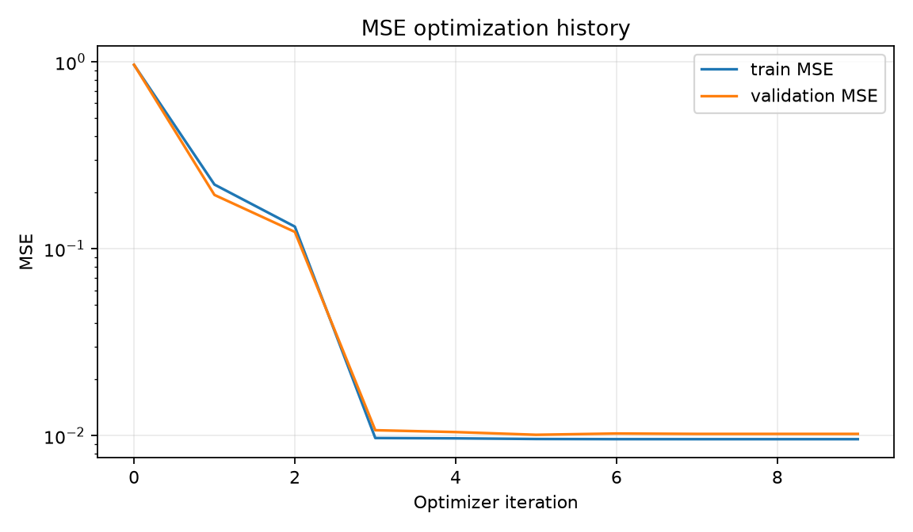
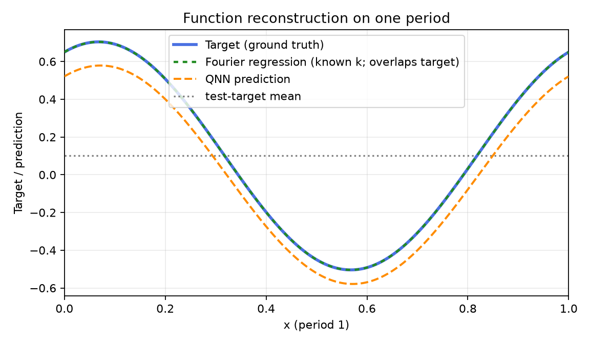
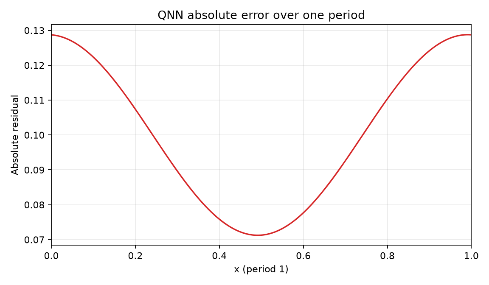
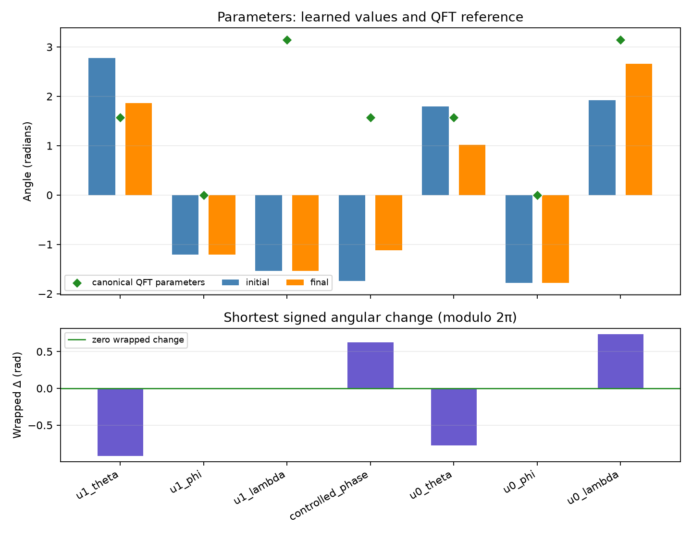

Comparison group: periodic-function-mse-ry-angle-encoding-z1-readout
Training loss: MSE only; no Frobenius/process-fidelity term or PINN residual.
Encoding: RY(2πx)|0⟩ on qubit 0, x∈[0,1), period 1.
Readout: ideal Pauli-Z expectation on qubit 1.
Absolute error over one period: mean=0.1, max=0.12876; pointwise |QNN prediction − target| on the 2048-point periodic grid.
{
"run_id": "20261017T005342973185Z_periodic-function-mse_seed-0051_1bb125fe",
"status": "FINISHED",
"comparison_group": "periodic-function-mse-ry-angle-encoding-z1-readout",
"protocol_version": "0.1.0",
"objective": "training-set mean squared error only",
"loss_excludes": [
"process fidelity",
"Frobenius/unitary alignment",
"PINN/physics residual",
"frequency labels"
],
"encoding": "RY(2*pi*x)|0> on q0; x in [0,1), period 1",
"ansatz": "qft2_trainable_u_cp_u_swap",
"readout": "Pauli-Z expectation on q1",
"seed": 51,
"data_seed": 314159,
"optimizer": "L-BFGS-B",
"iterations": 9,
"function_evaluations": 120,
"optimizer_success": true,
"optimizer_message": "CONVERGENCE: NORM OF PROJECTED GRADIENT <= PGTOL",
"elapsed_seconds": 0.1431418180000037,
"initial_train_mse": 0.9634486316916341,
"final_train_mse": 0.009582984047616415,
"validation_mse": 0.01022628662725768,
"test": {
"mse": 0.01038742135731843,
"rmse": 0.10191869974307183,
"r2": 0.9435097450336983
},
"constant_baseline_test": {
"mse": 0.1898933590235803,
"rmse": 0.43576755159555,
"r2": -0.03270329551922346
},
"known_frequency_fourier_baseline_test": {
"mse": 7.212394812967852e-32,
"rmse": 2.6855902168737234e-16,
"r2": 1.0
},
"spectral_coefficient_mse_k0_to_16": 0.0006003987027500798,
"target_peak_frequency": 1,
"predicted_peak_frequency": 1,
"frequency_peak_correct": true,
"qft_process_fidelity_diagnostic_only": 0.06842499209820428,
"initial_qft_process_fidelity_diagnostic_only": 0.07936420216729839,
"dense_grid_absolute_error_mae": 0.10000000000000014,
"dense_grid_absolute_error_max": 0.1287595385111685
}




